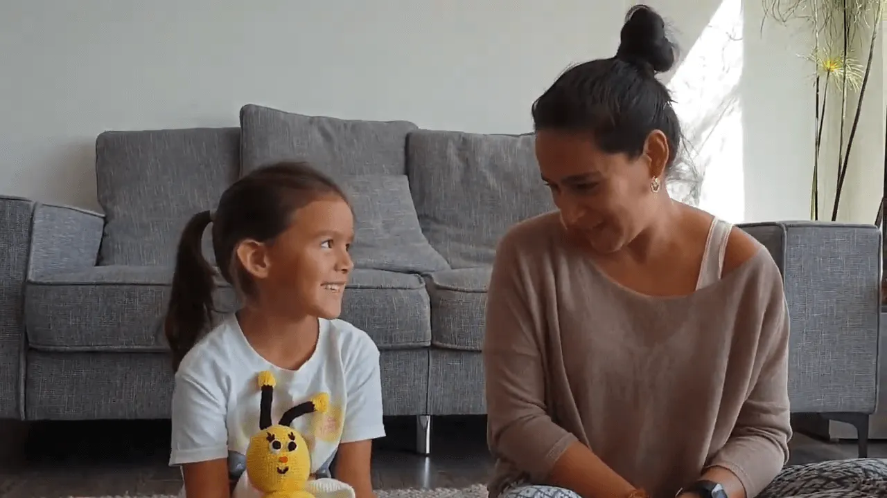

Hoy junto a Luz queremos compartirles un ejercicio de respiración, ideal para nuestros niños y niñas en momentos de estrés, rabia, miedo o frustración.
☆
Con este simple ejercicio podemos lograr que alcancen estados de calma y tranquilidad 🧘♀️💜🧘♂️
☆
👉 ¿Cómo hacerlo?
• Lo primero es encontrar un lugar tranquilo.
• Luego siéntate en una postura cómoda, puede ser sobre una alfombra o incluso sobre tu cama.
• Con la espalda recta, pon tus dedos índices a la altura de los ojos.
• Luego, con ambos dedos tapar los oídos y e imitar el zumbido de las abejas durante algunos segundos.
• Repetir al menos 3 veces y luego realizar una respiración profunda para sentir como nuestro cuerpo y emociones han logrado calmarse.
☆
Si te ha gustado este ejercicio, te invitamos a compartirlo con tus amigos y amigas! 👧🧑
☆
Estaremos felices de leer tus comentarios.
☆
Un abrazo,
Carmen y Luz 🌱
